Maintenance - Condition Based Service (CBS) Overview
SI B 00 07 02Maintenance and General Hints
February 2009
Technical Service
This Service Information bulletin supersedes SI B00 07 02 dated November 2007.
[NEW] designates changes to this revision
SUBJECT
Condition Based Service
MODEL
[NEW] All models with Condition Based Service
SITUATION
This information is intended to provide a general system overview of Condition Based Service (CBS), which is an advanced development of the previous Service Interval Indicator systems.
CBS measures, monitors and determines the required maintenance of several service items independently of each other. This technology prompts the customer to bring the vehicle in for service whenever one of the CBS items requires maintenance or replacement. CBS strikes a compromise between too frequent maintenance intervals and too rigid service intervals that call for the replacement of service items that may still have substantial remaining useful life. CBS also details the recommended, due, and overdue required maintenance during and after the BMW Vehicle Maintenance Program Agreement.
[NEW] For details of CBS service items and maintenance intervals, refer to the vehicle and model year specific Service Information bulletins entitled "New Vehicle Preparation and Maintenance Requirements" located in Group 00 or the relevant Owner's Manual.
SERVICE RECOGNITION
The vehicle recognizes when a service is required using the following three methods:
A. Adaptive, using sensor technology and algorithms to determine the required maintenance of a service item depending upon the individual customer driving style. For example:
^ Oil change is determined from the engine oil condition sensor which monitors the oil condition, oil level, and oil temperature, and from additional algorithms using these parameters: engine load, fuel consumption, time and distance since the last oil change.
^ [NEW] Microfilter replacement (dependent on vehicle model and CBS version).
^ Replacements of front and rear brake pads are determined from 2-stage brake lining wear sensors located on the left front and right rear brake pads, and from residual wear algorithms using these input parameters: travel distance, wheel speed, braking pressure, braking time, and braking frequency.
B. Fixed Time (months) to determine the required maintenance of a service item. For example:
^ Brake Fluid and Engine Coolant changes.
^ State Safety and Emissions Inspections.
C. Fixed Distance (miles) to determine the required maintenance of a service item. For example:
^ Vehicle Check.
^ [NEW] Spark plug replacement (dependent on vehicle model and CBS version)
^ [NEW] State Safety and Emissions inspections
D. [NEW] Connected to Oil Service, based on which oil service being performed. For example:
^ Spark plug replacement (dependent on vehicle model and CBS version)
^ Air filter
^ Automatic transmission fluid
^ Microfilter replacement (dependent on vehicle model and CBS version)
[NEW] SERVICE INDICATION (EXCEPT E65 AND E66)
The service indicators are displayed in two possible locations inside the vehicle:
1. Instrument Cluster
The Instrument Cluster CBS display uses two separate displays:
^ A colored symbol in the center upper display:
^ Orange for normal
^ Yellow for service due
^ Red for service overdue
^ The remaining distance display is in the center lower display.
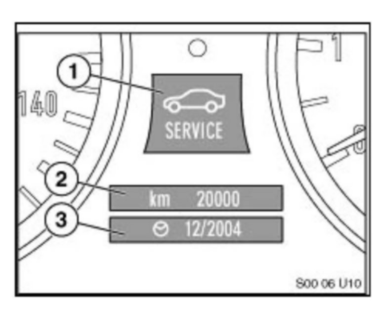
The illustration shows the CBS Display in the Instrument Cluster.
(1) The CBS symbol in center upper display
(2) The remaining distance display in the center lower display
(3) The Next Service Due date information in the center lower display
2. Central Information Display (CID)
For vehicles with a CID, the CID can display all information on the individual service operations. The CBS functions are stored in the "Settings" menu item and can be used exclusively for individual user settings.
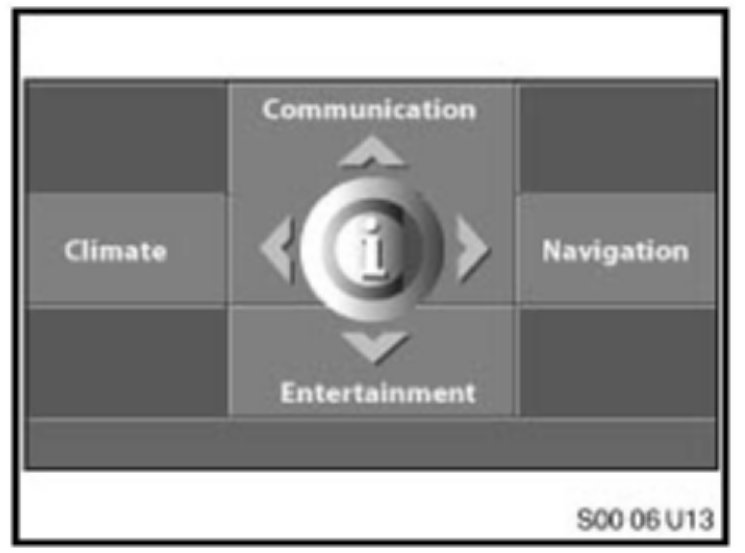
Press the controller down in the main menu and the "Settings" menu will appear.
Turn the controller until "Service" is highlighted, then press to activate the CBS menu.
The CBS menu window will appear and is divided into the following control and display fields:
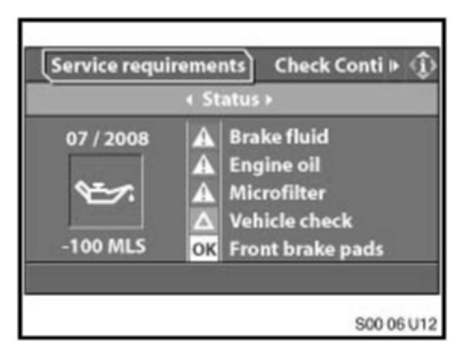
^ Status bar
^ First menu bar
^ Second menu bar
^ Display field for CBS symbol
^ Display field for service operation.
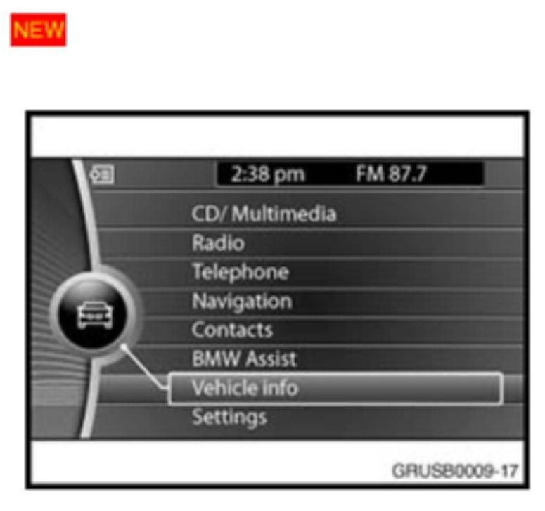
[NEW]
For vehicles with a CIC (Car Information Computer): from the start screen, select Vehicle Info / Vehicle status / Service required.
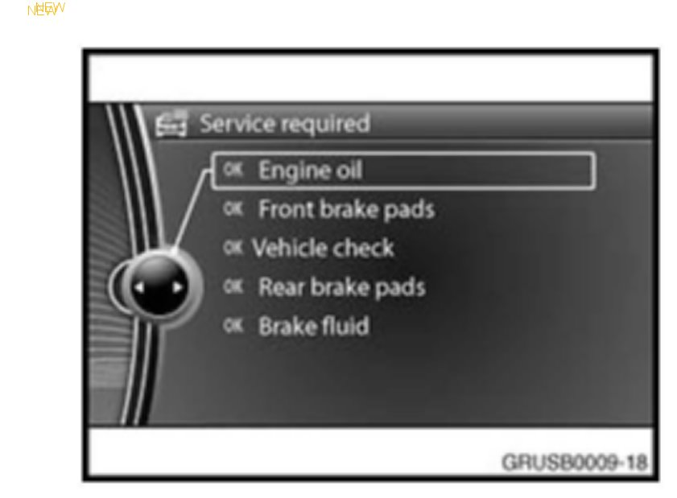
[NEW]
The Service required screen displays all the maintenance items and their current status.
[NEW] PROCEDURE TO VIEW OR RESET SERVICE ITEMS IN THE INSTRUMENT CLUSTER (EXCEPT THE E65 AND E66)
1. Turn ignition to Terminal 15.
2. Press and hold the Instrument Cluster Set/Reset button for 10 seconds.
3. The upper display in the Instrument Cluster will be illuminated with a Service Item (example: An oil can is the designation for Oil Service). The lower display in the Instrument Cluster will indicate the remaining time or mileage left for that Service Item (example: 14000). Pressing the button repeatedly will allow the display to scroll through all of the Condition Based Service Items.
4. Press and hold the Instrument Cluster Set/Reset button again and the lower display screen will indicate "OK" or "DUE".
5. Pressing the Instrument Cluster Set/Reset button again will allow the "RESET" to appear in the lower window for that service. Releasing and reapplying the button one more time will reset the service displayed in the upper window only. Repeat the procedure for any additional service reset needs.
Note:
The CBS service items for both State Vehicle Safety Inspection and State Emissions Inspection cannot be viewed in the Instrument Cluster. These State Inspections can be viewed on the CBS Menu in the Control Display or by DISplus / GT1.
[NEW] PROCEDURE TO RESET THE CBS DISPLAY BMW GROUP DIAGNOSTIC SYSTEM (EXCEPT THE E65 AND E66)
Using the [NEW] BMW diagnostic system, the CBS Reset sets the selected service item to 100% (full service interval) and displays a service counter indicating how many times the service item has been reset.
The CBS reset procedure is found under: Diagnosis - Function Selection - Service Functions - Maintenance - CBS Reset - Test Plan. Then highlight the listed procedure and press the bottom right corner green arrow to the right.
Note:
The original value of the individual CBS service item will be deleted during the reset procedure.
The next screen offers 3 selection menus:
The next screen offers 4 selection menus:
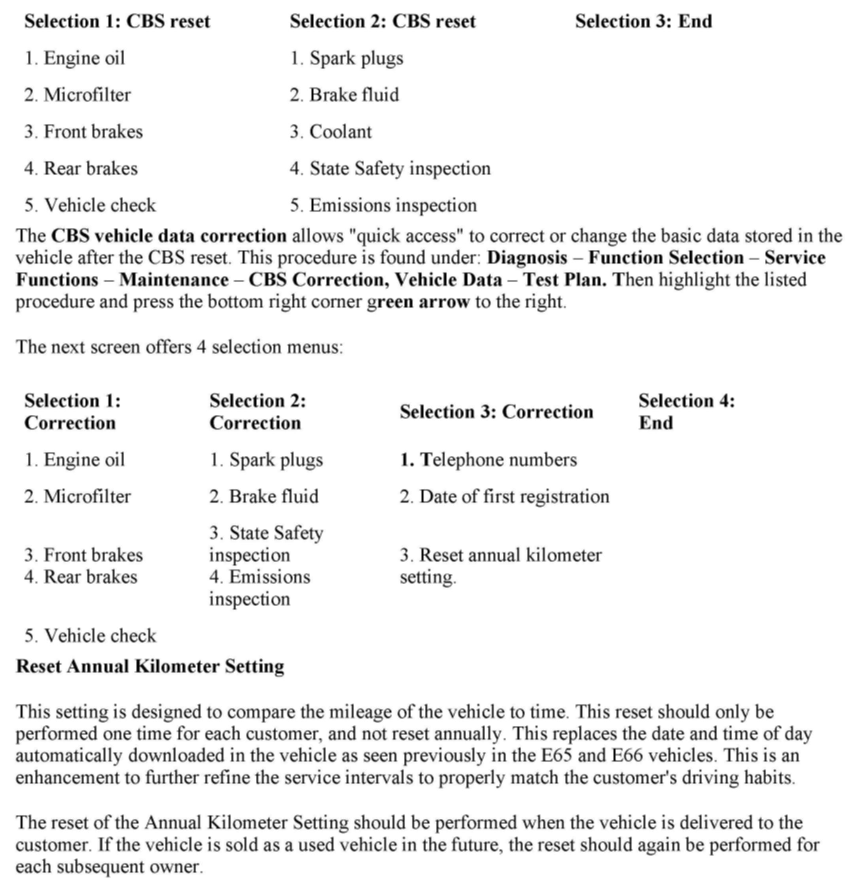
E65 AND E65 SERVICE INDICATION
The service indicators can be displayed in three different locations inside the vehicle:
A. The Service Need Display (SBA) , located in the Instrument Cluster under the Speedometer, is the evolution of the SIA4 Service Interval Display. When the ignition (KL15 Terminal) is on, the SBA appears briefly. The first line specifies the mileage range before the next service is due. The second line, displayed by a clock symbol, specifies the time range before the next service is due. If service is overdue, a minus sign ("-") will appear with the overdue mileage or time.
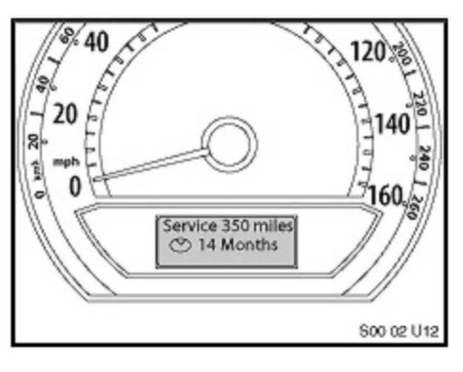
For example: The next mileage-dependent service item is due in 350 miles and the next time-dependent service item is due in 14 months.
B. The Check Control Display located in the Instrument Cluster under the tachometer.
For example: If either the front or rear brake linings are worn, the following is displayed:
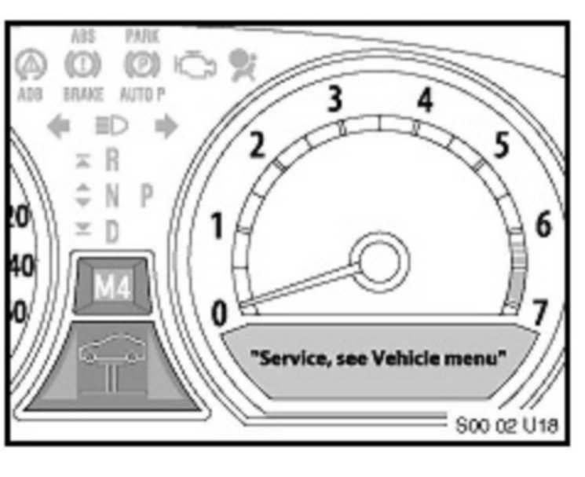
^ "Service, see Vehicle menu" is displayed in the Check Control Display. For more detailed information, the user can access the CBS Menu in the Control Display.
^ The general brake warning lamp and the variable control lamp illuminate in the Instrument Cluster.
^ The variable control lamp shows the symbol of a car on a lifting platform in the bottom center of the Instrument Cluster.
C. The CBS Menu in the Control Display provides additional information on any required service. The CBS Menu can be accessed by doing the following:
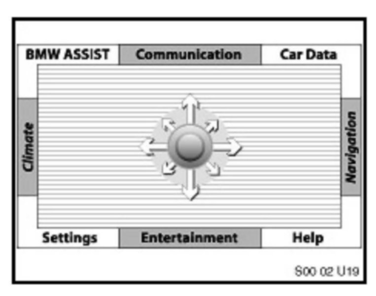
^ Select the "Car Data" menu using the controller.
^ After releasing the controller or returning to the central position, the "On-board Data" menu appears.
^ Turn the controller until the Vehicle Symbol (bottom left) is highlighted.
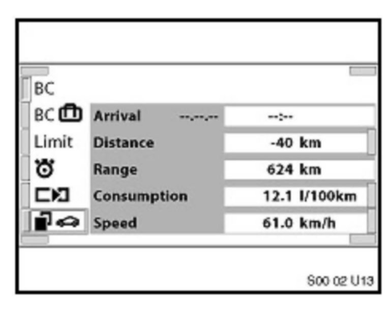
^ Confirm the selection by pressing the controller.
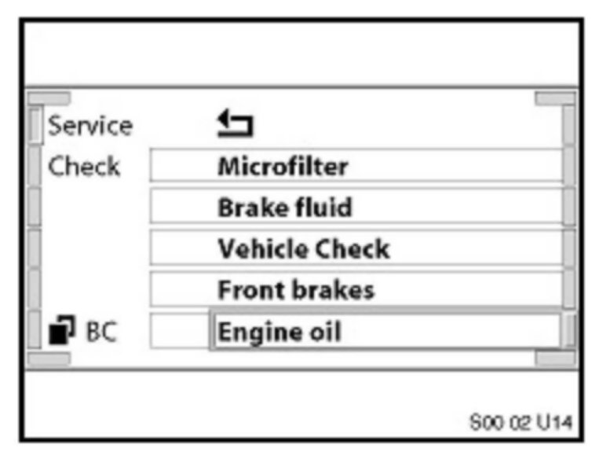
^ Turn the controller until Service (top left) is highlighted.
^ Confirm the selection by pressing the controller.
^ The CBS menu appears with the service items.
The service items are displayed in three different colors:
1. Green - No service is currently required.
2. Yellow - Service deadline is approaching (please see the above table: "Yellow" Interval Before Service Is Due).
3. Red - Service deadline has already passed (overdue).
To display the information of a service item, turn the controller to select the item and confirm the selection by pressing the controller.
E65 AND E66 PROCEDURE TO RESET THE CBS DISPLAY USING THE INSTRUMENT CLUSTER
The CBS Reset procedure enables resetting of the individual service item. After a service has been performed, the service item must be reset to 100% (full service interval). To reset a service item:
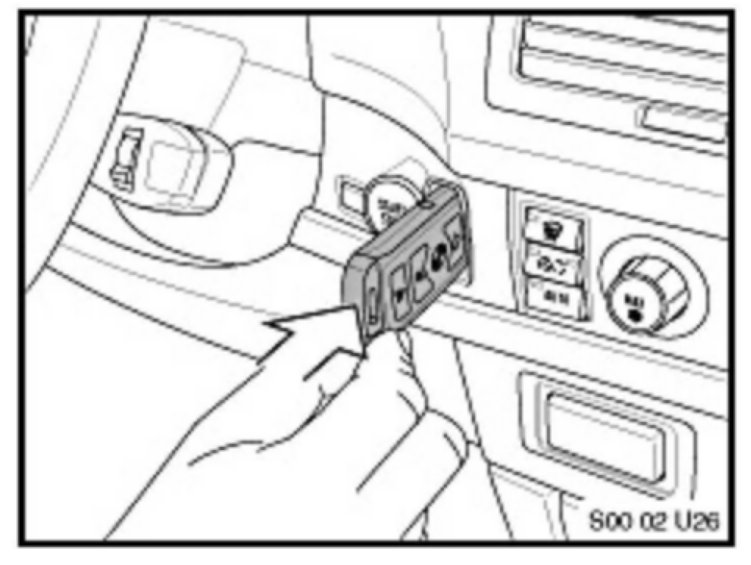
1. Insert the Remote Control into the Ignition Lock.
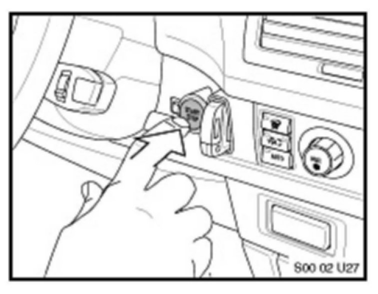
2. Press the Start/Stop Button once (KL 15 is "ON") with foot off the Brake Pedal.
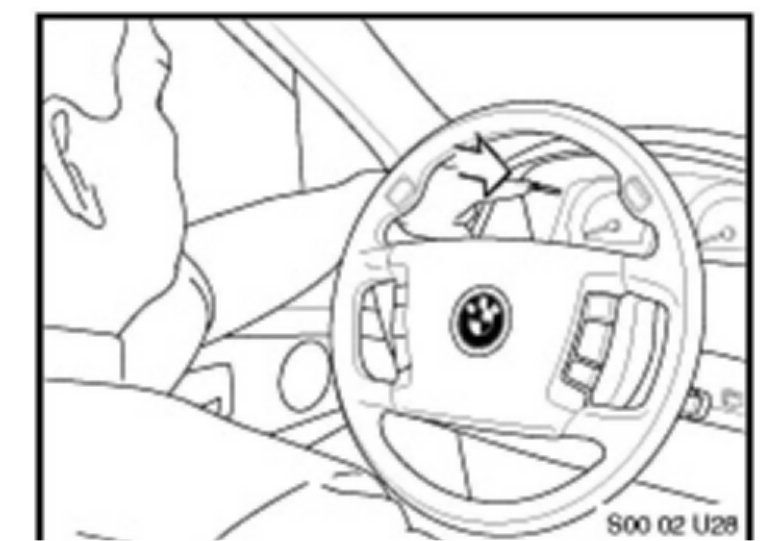
3. Press and hold the Reset Button located on the upper left side of the Instrument Cluster for about 5 seconds.
4. Release the Reset Button when a 4-line menu appears inside the Speedodometer display. At the top line is the "Back" function, followed by the first 3 service items. The menu will list the service items sorted by priority of the service due.
Note:
If the Reset Button is held too long and not released when the above 4-line menu appears, the system will go into Instrument Cluster Test Functions:
01 Identification
02 System test
03 Not used
04 Consumption
To exit Test Functions, remove the Remote Control from the Ignition Lock and repeat steps 1 through 4 above.
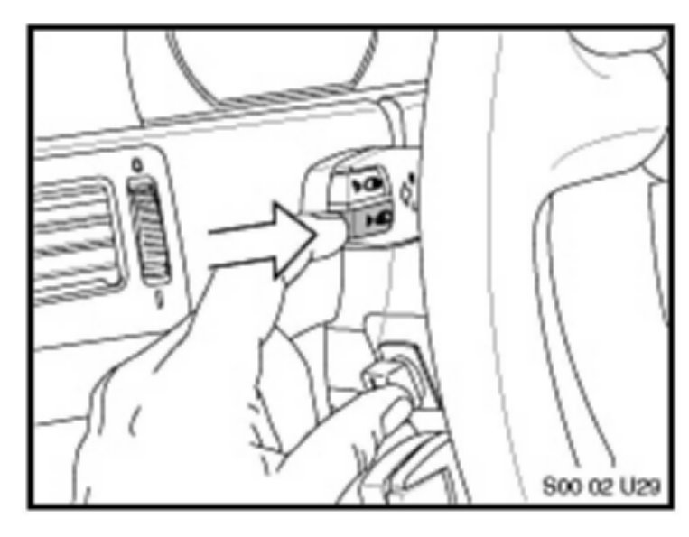
5. Tap the Reset Button or the lower FAS Button located in the side of the Turn Signal/High Beam Stalk to view the next service items in the menu.
6. Select the Service Item with "!" or "-" by tapping the Reset Button or the lower FAS Button.
7. Press and hold the Reset Button for a few seconds to display a 2-line menu in the Tachometer.
The third menu line will appear to confirm if the reset is successful. The nominal interval for the service item will also be highlighted in the Service Need Display (SBA), located under the Speedometer in the Instrument Cluster.
[NEW] E65 AND E66 PROCEDURE TO RESET THE CBS DISPLAY USING BMW DIAGNOSTIC TESTER
Using the [NEW] BMW diagnostic tester, the CBS Reset sets the selected service item to 100% (full service interval) and displays a service counter indicating how many times the service item has been reset.
The CBS reset procedure is found under: Diagnosis - Function Selection - Service Functions - Maintenance - CBS Reset - Test Plan. Then highlight the listed procedure and press the bottom right corner green arrow to the right. The original value of the individual CBS service item will be deleted during the reset procedure.
The first vital step of the reset procedure is to verify the DISplus or GT1 correct date and time: "Are the current date and time correct?" This is important for time and distance-based service items that are managed by the Instrument Cluster, because the internal vehicle trip odometer and vehicle data will be synchronized with the internal Tester data. Confirm by either pressing Yes or No (if required, correct date and time in Main Menu - Administration - DIS - Date/Time). Then select the bottom right corner green arrow to the right.
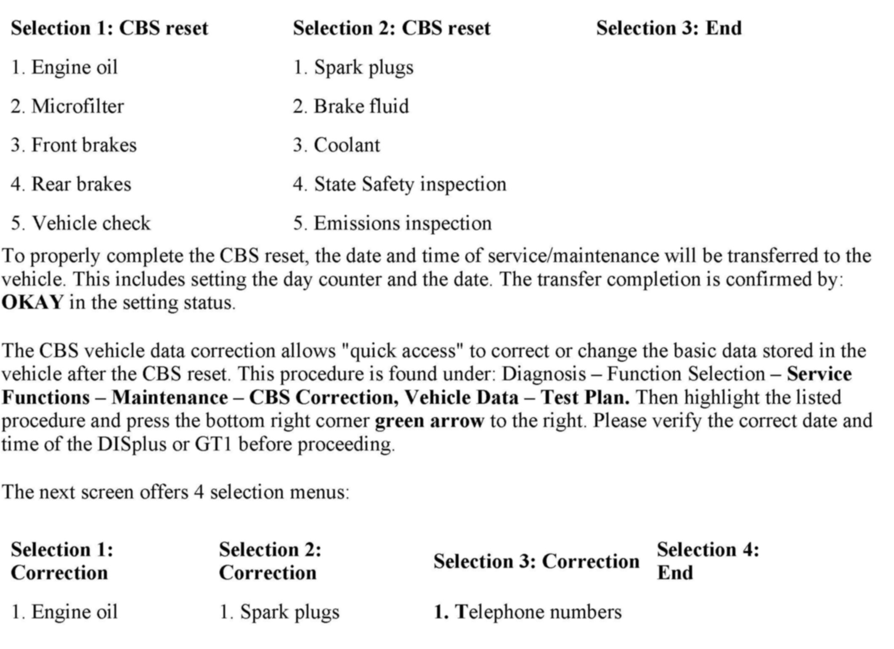
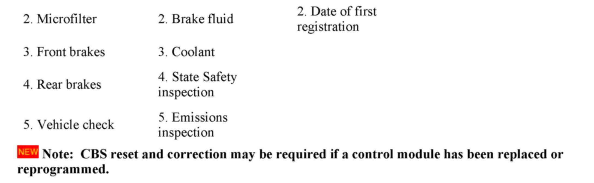
The next screen offers 3 selection menus shown above.
The next screen offers 4 selection menus shown above.